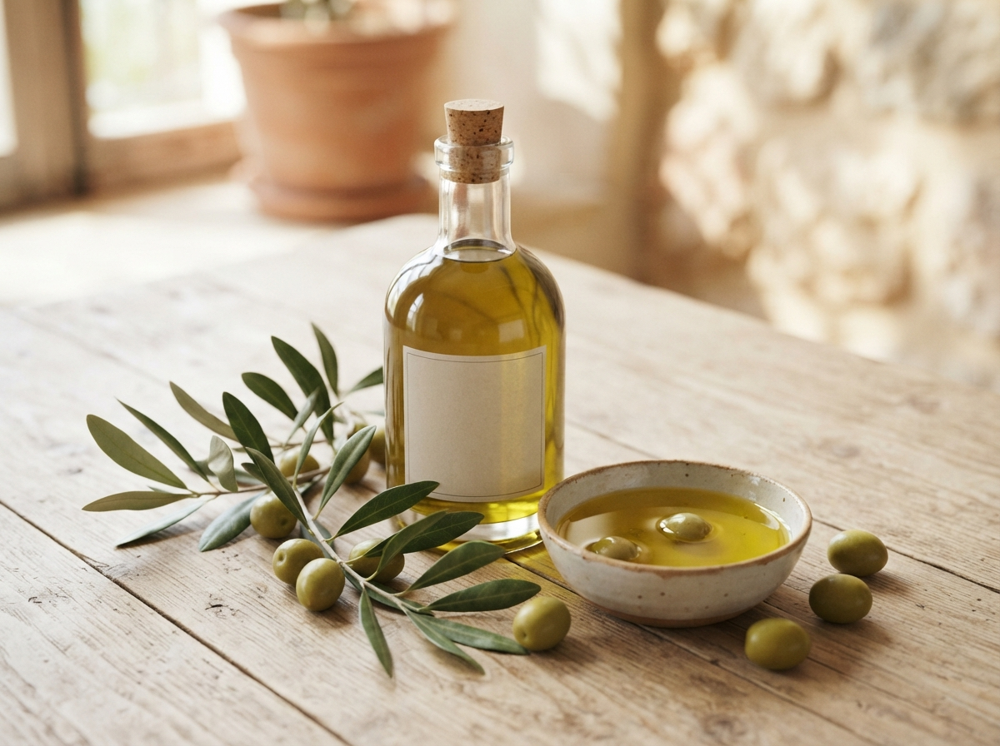
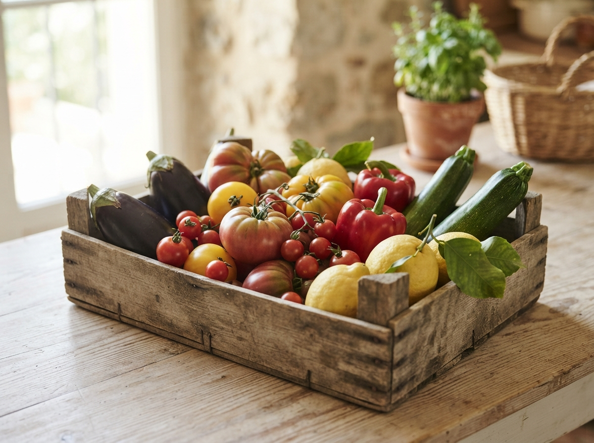
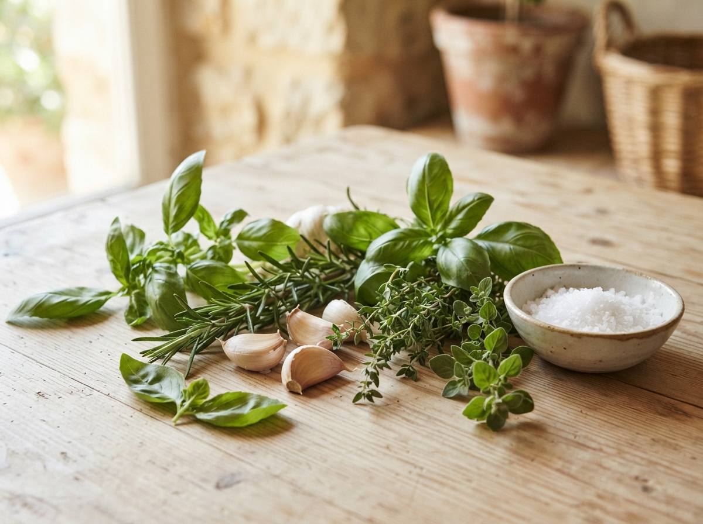
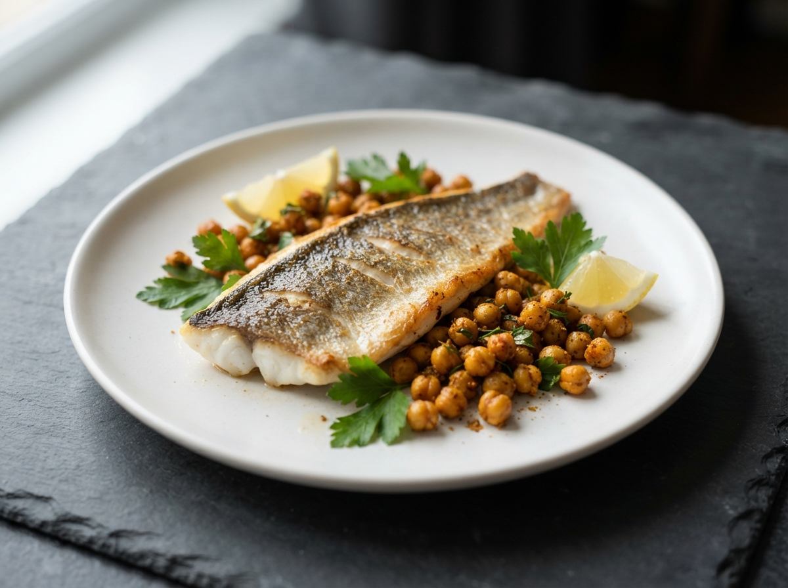

Klasyczna sałatka grecka (Horiatiki)

Chrupiący ogórek, soczyste pomidory, czerwona cebula oraz oryginalny blok sera feta. Wszystko skropione obficie oliwą z pierwszego tłoczenia i oprószone oregano.
Odkryj sekrety kuchni śródziemnomorskiej pełnej aromatycznych ziół, oliwy z oliwek, świeżych warzyw i tradycji, które łączą pokolenia.
Zobacz przepisy
Chrupiący ogórek, soczyste pomidory, czerwona cebula oraz oryginalny blok sera feta. Wszystko skropione obficie oliwą z pierwszego tłoczenia i oprószone oregano.
Kuchnia śródziemnomorska to tradycje kulinarne krajów leżących wokół Morza Śródziemnego, przede wszystkim Włoch, Grecji i Hiszpanii, ale także południowej Francji czy Maroka. Uznawana jest za jedną z najzdrowszych diet świata.
Jej zakres potraw jest niezwykle szeroki – od prostych przystawek (takich jak greckie meze czy hiszpańskie tapas), przez świeże sałatki i zupy warzywne, aż po aromatyczne makarony, risotta oraz grillowane ryby i owoce morza.

Spaghetti pomodoro
25 min łatwe
Pizza margherita
50 min średnie
Łosoś z cytryną
30 min łatweWłochy
Makarony, pizza, risotto
Grecja
Meze, feta, grillowane mięsa

Hiszpania
Tapas, paella, gazpacho

Oliwa z oliwek
podstawowy tłuszcz używany zarówno na zimno, jak i do smażenia.

Świeże warzywa i owoce
pomidory, bakłażany, cukinia, papryka oraz cytrusy.

Zioła i przyprawy
bazylia, oregano, tymianek, rozmaryn i czosnek zamiast nadmiaru soli.

Ryby, owoce morza i rośliny strączkowe
główne źródło białka zamiast ciężkiego, czerwonego mięsa.